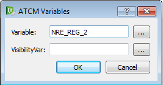

Este objeto permite la visualización y escritura de una variable entera de la Crosstable en un estilo deslizante.
Para utilizarlo, siga los pasos siguientes:
Arrastre el objeto a la página.
Haga doble clic en el objeto.

Defina el campo variable con el nombre de la variable Crosstable de la que desea leer/escribir. Pulse el botón “…” para seleccionar la variable deseada.
Defina la variable visibilityVar con el nombre de la variable Crosstable de la que se desea leer el valor a utilizar para mostrar o no el objeto. Pulse el botón “…” para seleccionar la variable deseada.
Marcar la variabile viewStatus en caso de que desee una información gráfica del éxito o fracaso de la escritura o relectura.
En la sección QAbstractSlider introduzca la propiedad:
orientation: la orientación de la barra (vertical u horizontal).
minimum: el valor mínimo que tomará la variable.
maximum: el valor máximo que tomará la variable.
singleStep y pageStep la granularidad con la que se visualizará la variable.